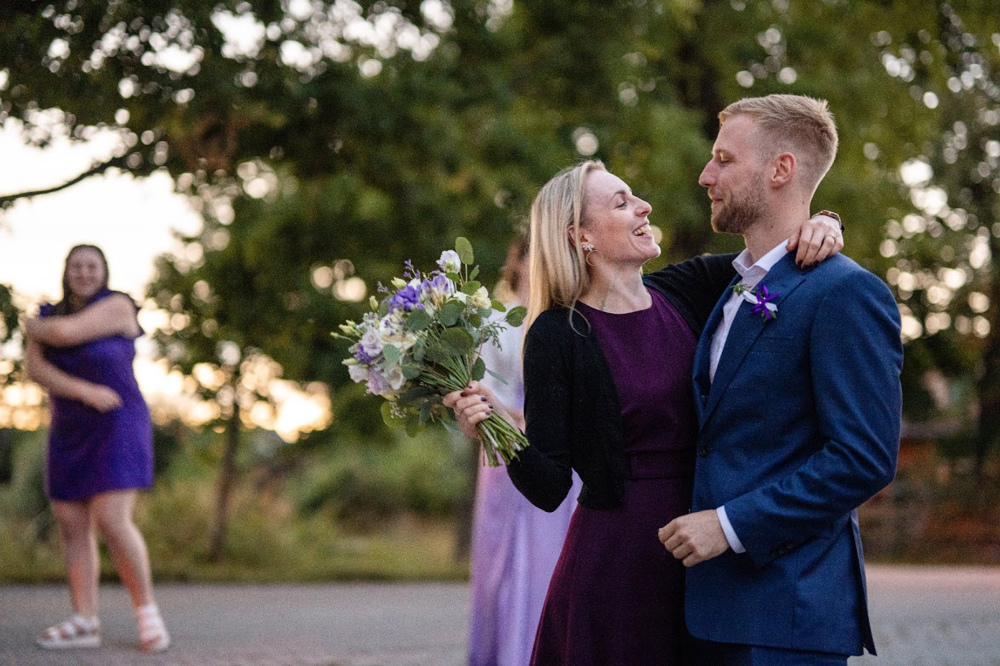
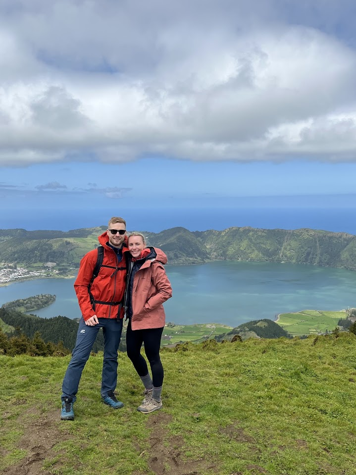
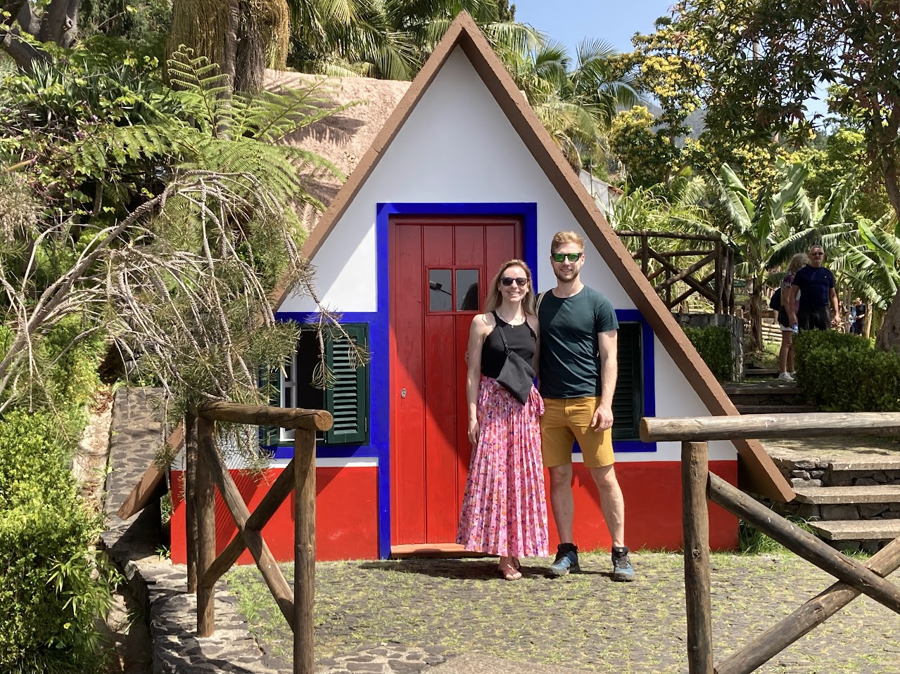
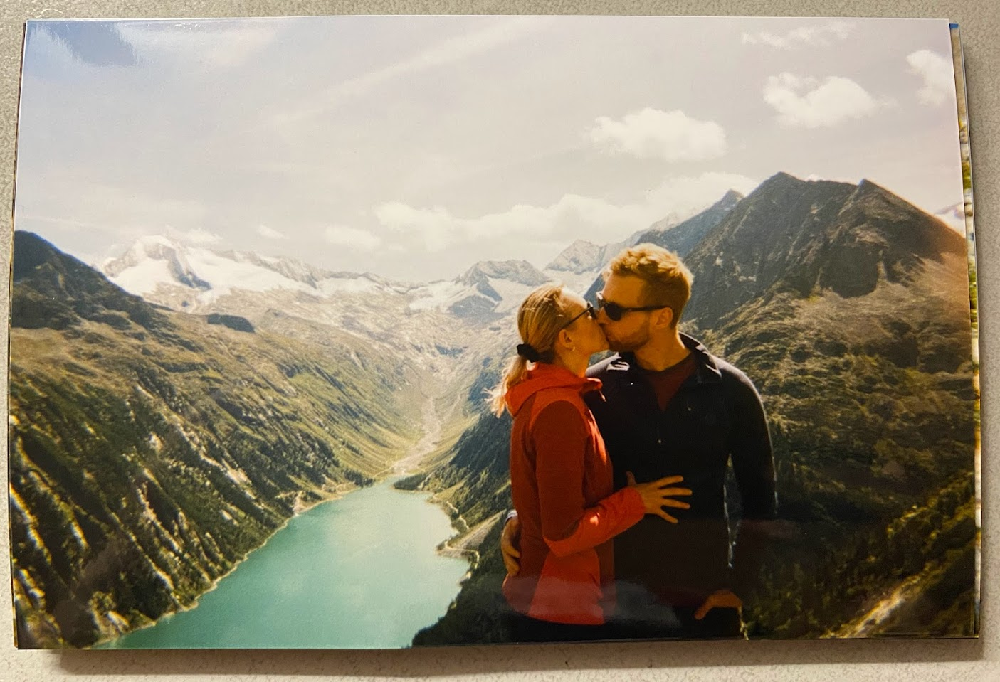
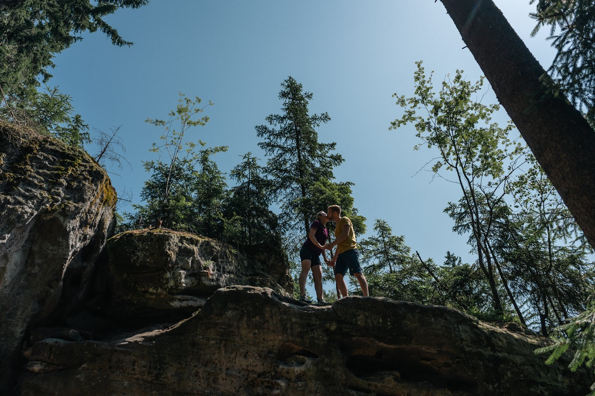
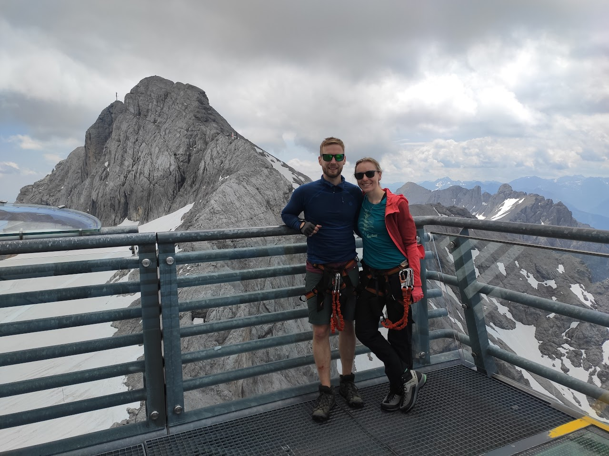

Příjezd hostů
Postupný příjezd hostů, drobné občerstvení.
Postupný příjezd hostů, drobné občerstvení.
Venkovní svatební obřad.
Společné focení.
Společný servírovaný oběd pro všechny hosty.
Novomanželé nakrájí a všichni sní.
Házení a chytání kytice pro nevdané.
Večerní teplý raut.
Hudba, tanec a oslava do pozdních hodin.






Nejjednodušší cesta do Lenory je po dálnici D4 a dále přes Písek směrem na Strakonice a Vimperk. Z Prahy je také možné jet přímo směrem na Písek a poté pokračovat na Strakonice a Vimperk – stačí se držet směru na Šumavu.
Pokud se rozhodnete na svatbě přenocovat, je k dispozici několik možností ubytování:
Kapacita vnitřního ubytování je omezená, proto budeme hosty individuálně kontaktovat ohledně preferencí.
Pokud si přejete řešit ubytování po vlastní ose, v Lenoře jsou k dispozici například Penzion u Grobiána či Penzion Pod pecí, nebo další možnosti ve Volarech, vzdálených cca 9 km.
Parkovat můžete přímo na louce u stodoly viz mapa. Pro hosty ubytované na chatě Lenora je také možnost nechat auto zaparkované u chaty a dojít na místo svatby pěšky nebo se domluvit ve více lidech na společném odvozu.
Prosíme vás aby jste se oblékli formálně. Do žádných specifických barev oblečení na svatbě neladíme, nechceme aby jste kvůli nám museli shánět šaty ve specifickém odstínu.
Žádáme vás však aby jste se nepřevlékali do ležérnějších věcí do té doby než se převlékne nevěsta do večerních šatů.